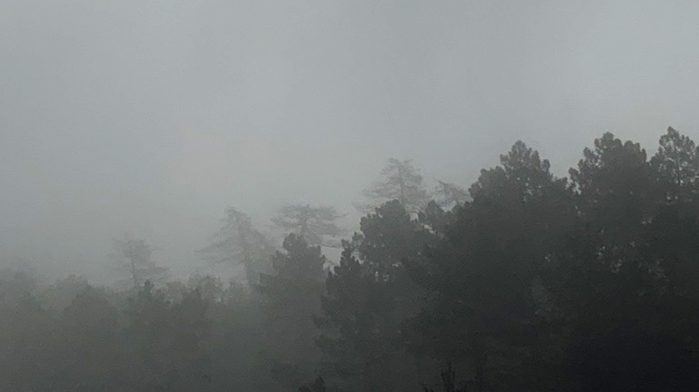
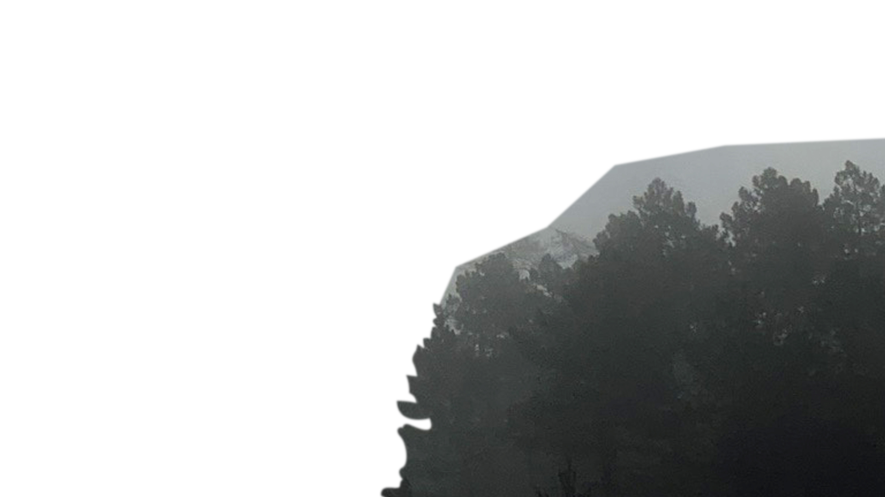

Sarah's
Homepage

MADA
Online
Poster
Exhibition
28.08.20
This is a drawing prompt generator that challenges
the viewer to draw a cryptid that has been
randomly generated. I have focussed on making my
pages as playful and fun as possible, with some
experimentation with darker, more mysterious
styles (typical of the style associated with many
well-known cryptids). The more playful posters
encourage creativity, and encourage the viewer to
think outside the box when drawing their cryptid.